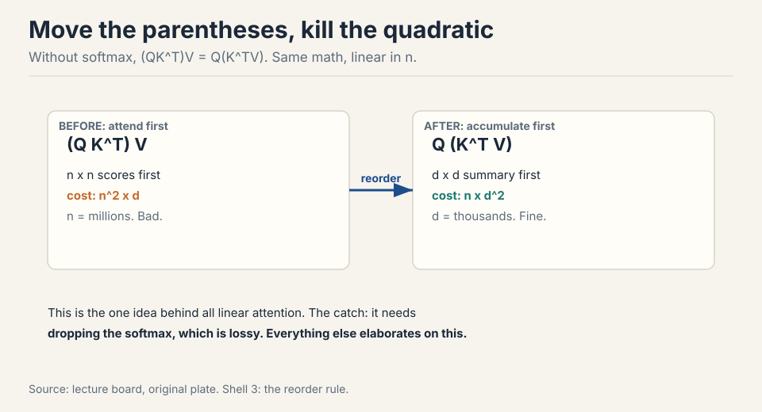
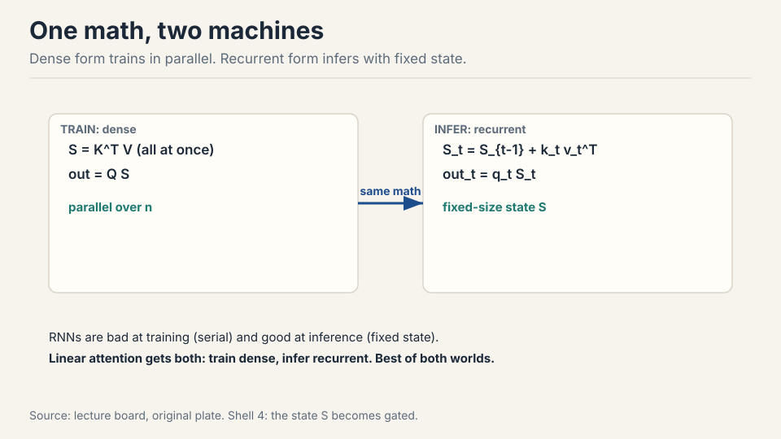
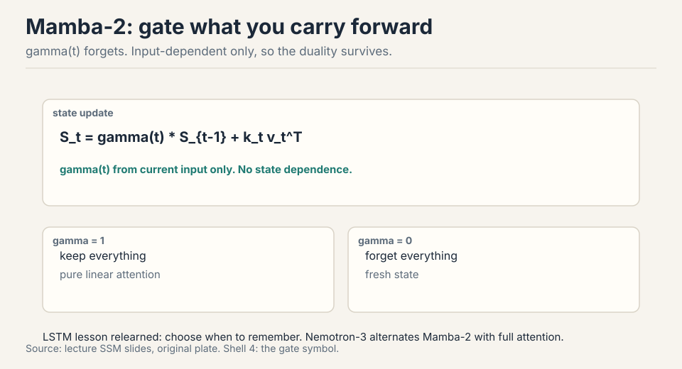
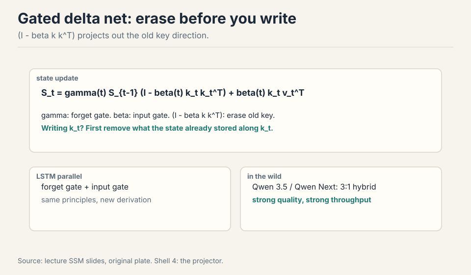
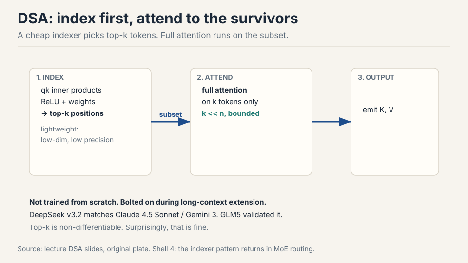
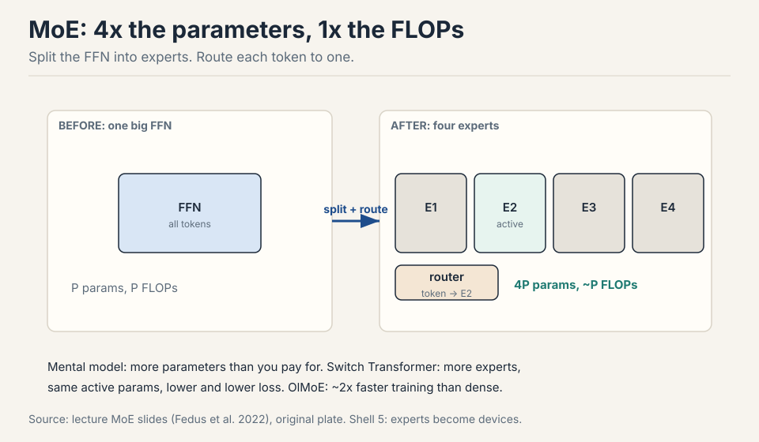
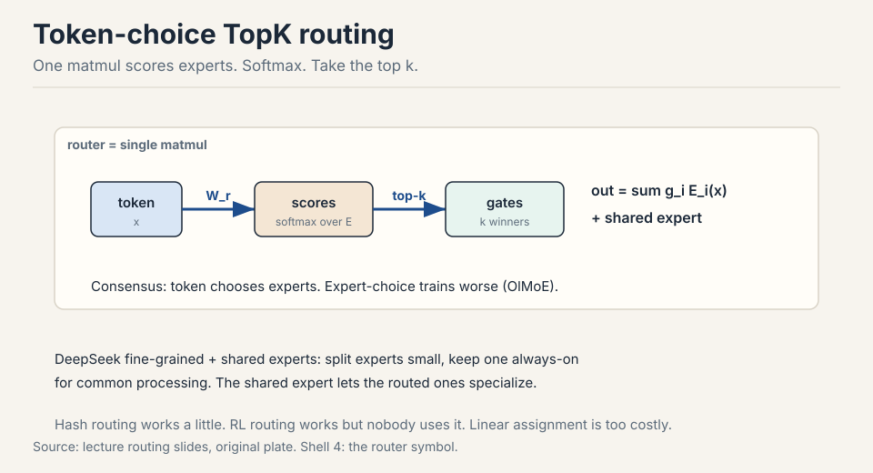
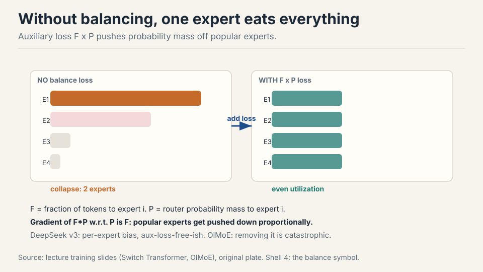

Lecture 4: Linear Attention and Mixture of Experts
Video blocked (ad-blocker or local file mode).
Watch on YouTubeVideo not loading? Watch on YouTube
Original lecture. Tatsu Hashimoto covers attention alternatives for long context and the full mixture-of-experts design space.
How to read this lesson
This lesson has two levels. Level 1 (Core) covers linear-time attention: the one idea behind it, the RNN duality, and the three battle-tested variants. Level 2 (Deep) covers mixture of experts: the mental model, routing, training heuristics, and the DeepSeek evolution.
Two halves, one theme: get more capability per unit of compute. Links back: Lecture 3 for the transformer block, Lecture 2 for intensity.
Level 1: The long-context problem
Context windows keep growing: vendors race to larger sizes on a log scale 01:37 ⏱01:37. The feedforward cost grows linearly with sequence length. Attention grows quadratically. Past a point, attention dominates everything.
feedforward : O(n) linear in sequence length attention : O(n^2) quadratic, dominates past a point escapes : linear attention, hybrids, FlashAttention (~2x)
The toolkit has two drawers. Hybrids: mix cheap local layers with rare full-attention layers (last lecture’s sliding windows). Systems: FlashAttention rearranges attention to minimize memory traffic, a pure constant-factor win of ~2x that also avoids materializing the n x n matrix 03:18 ⏱03:18. Constants matter enormously. But for 5-10M tokens, constants are not enough. That is where linear time comes in.
Level 1: The one idea, associativity
Write attention as (QK^T)V. Drop the softmax for a moment. Matrix multiplication is associative: (QK^T)V = Q(K^TV) 06:05 ⏱06:05.

Left path: n x n scores first, cost n^2 x d. Right path: d x d summary first, cost n x d^2. Sequence lengths are millions. Hidden dims are thousands. The right path wins by orders of magnitude. Every linear attention method is an elaboration of this reorder.
Level 1: The RNN duality
The right path has a second form. Sweep left to right, maintaining a fixed-size state S: S_t = S_{t-1} + k_t v_t^T, then output q_t S_t 08:11 ⏱08:11.

Dense form: parallel, great for training. Recurrent form: fixed-size state, great for inference. RNNs were always good at inference and bad at training. Linear attention gets both. The dense-to-recurrent equivalence is exact. The lossy step was dropping the softmax at the start 21:02 ⏱21:02.
Dropping the softmax is exactly what enables the reorder: without it, associativity moves the quadratic term from n^2 to d^2, and the recurrent form gives fixed-size-state inference. Softmax attention needs a KV cache that grows with context. Linear attention carries a fixed state instead. The price is expressiveness: the all-to-all softmax connection is genuinely powerful, which is why every deployed system is a hybrid, not pure linear. The equivalence is between the two forms of linear attention, not between linear and softmax attention. Dropping the softmax is the lossy step. As you replace more softmax layers with linear ones, you lose more of the all-to-all modeling power, and long-context QA degrades first.
Level 1: Mamba-2 adds a forget gate
Pure linear attention always carries the full state forward. The LSTM lesson: learn when to forget. Mamba-2 adds gamma(t), computed from the current input only 11:46 ⏱11:46.

Because gamma depends on the input and not the state, the dense/recurrent duality survives. Nemotron-3 alternates Mamba-2 layers with full softmax attention and matches strong models with much better long-context throughput 13:28 ⏱13:28.
Level 1: Gated delta net erases before writing
Push further: add a second gate beta(t) controlling how much of the current input enters the state, plus a projector (I - beta k k^T) that erases the old key direction before writing the new one 15:02 ⏱15:02.

The intuition: when writing key k_t, first remove what the state already stored along k_t, then add the new information. Same projector appears independently in meta-learning least squares and fast weight programming: different derivations, same solution. Qwen 3.5 and Qwen Next use a 3:1 gated-delta-net-to-attention hybrid with strong results and much higher decode throughput at long contexts 18:21 ⏱18:21.
Controlled ablations (ByteDance Seed + UC Santa Cruz) show the hybrid pattern clearly: at low ratios of linear layers, no quality hit. Past a threshold, long-context performance degrades steadily toward pure-RNN levels 19:03 ⏱19:03. Single-key retrieval is explicitly optimized by these architectures and hides the degradation. QA reveals it.
Level 1: DSA, the indexer alternative
DeepSeek Sparse Attention takes a different route. Keep softmax attention, but run it on a subset. A lightweight indexer scores tokens from qk inner products through ReLU and learned weights, takes the top-k positions, and full attention runs only on those 23:13 ⏱23:13.

The indexer is cheap by design: low-dimensional, low-precision. The second stage is quadratic but on a short, bounded context. The clever deployment trick: train a normal transformer, then bolt the indexer on during the long-context extension phase you were running anyway 24:49 ⏱24:49. DeepSeek v3.2 matches Claude 4.5 Sonnet and Gemini 3. GLM5’s ablations show near-zero loss vs full attention even on hard retrieval 26:00 ⏱26:00. And note the pattern: top-k selection with an auxiliary loss is the same trick MoE routing uses below.
Linear attention changes the complexity class to O(n) via the associativity reorder, at the cost of dropping softmax expressiveness. It needs hybrid softmax layers to stay competitive. DSA keeps full softmax quality on a top-k subset chosen by a cheap indexer. The indexer itself is still quadratic but with tiny constants. Sliding windows keep exact softmax in a fixed local window plus periodic global layers. Simplest, but the window bound is rigid. All three ship as hybrids with full attention, never pure. Training with the indexer is complex and annoying, and you run long-context extension anyway. Bolting it on in that phase costs little extra training and works surprisingly well despite the non-differentiable top-k. Do the expensive thing once, add the cheap thing late.
Level 2: MoE, more parameters than you pay for
Replace the MLP with several smaller FFNs called experts. A router sends each token to one (or k) of them. Four experts of the original size: 4x the parameters, ~1x the FLOPs per token 34:26 ⏱34:26.

The evidence: Switch Transformer (Fedus et al. 2022) shows test loss falling as expert count rises at fixed active parameters. OlMoE trains ~2x faster than its dense counterpart. DeepSeek v2 showed far fewer active parameters matching or beating dense models. Past a certain size, nearly every released model is an MoE 36:54 ⏱36:54.
MoE is also a parallelization axis: experts are natural chunks for different devices (expert parallelism), trading communication for the ability to scale further 39:55 ⏱39:55.
Because parameters keep helping even when only a subset is active per token. At fixed training FLOPs, more experts means lower loss. At fixed inference FLOPs, fewer active parameters means cheaper serving at the same quality. The Switch and OlMoE results show this is not subtle: ~2x training speedups and strictly better loss at matched compute. Above the size where infrastructure can handle routing, there is little reason to stay dense. Infrastructure complexity. Routing adds communication, experts must be sharded across devices, training needs balancing heuristics, the router softmax is a stability risk, and fine-tuning overfits badly. Small labs often stay dense because the operational cost exceeds the quality gain at their scale.
Level 2: Token-choice TopK routing
Three routing designs exist: token chooses experts, expert chooses tokens, or a global assignment solver. Nearly everything ships token-choice TopK: each token picks its k favorite experts 48:15 ⏱48:15. OlMoE shows token choice beats expert choice on both loss and benchmarks.
The router itself is embarrassingly simple: one matmul. Each expert owns a vector. Score = inner product with the token. Softmax. Take top-k 50:02 ⏱50:02. Hash routing (no learning) works a little. RL routing works but nobody uses it: too much overhead and variance for what heuristics achieve. Global linear assignment is optimal and far too expensive.

DeepSeek’s widely copied refinement: fine-grained experts (many small ones instead of few big) plus shared experts that bypass the router and process every token 54:27 ⏱54:27. Common processing moves to the shared expert. Routed experts specialize. OlMoE disagrees slightly on shared experts helping, but agrees fine-grained helps.
Level 2: Training MoEs, heuristics beat theory
Sparsity during training is the hard part: only k experts are active, so gating is non-differentiable and you never see the counterfactual experts 58:26 ⏱58:26. RL and stochastic perturbations (noise injection from the early papers) were tried. Later ablations showed the noise was unnecessary and even harmful. What ships is heuristics.
The core problem is rich-gets-richer: chosen experts get gradient signal, get stronger, get chosen more, and collapse to a few experts doing everything 63:36 ⏱63:36. The fix is the Switch auxiliary loss: L = F x P, where F is the fraction of tokens dispatched to expert i and P is the router’s probability mass on expert i. The gradient of F*P with respect to P is F, so popular experts get pushed down in proportion to their popularity. Not derived from first principles. understood through its gradient action.

DeepSeek v2 adds device-level balancing (balance machines, not just experts) as a second auxiliary loss 66:31 ⏱66:31. DeepSeek v3 moves toward aux-loss-free balancing with a per-expert bias term, though some auxiliary loss remains against extreme imbalance. The OlMoE ablation is stark: remove the balancing loss and nearly all tokens pile onto two experts. The rest of the parameters do nothing for most of training 68:03 ⏱68:03.
Level 2: MoE systems and stability notes
Expert parallelism ships activations between devices, so communication is the tax. Nemotron-3 downprojects the residual stream before the all-to-all collective: smaller vectors to move, without shrinking the model’s hidden dim 71:38 ⏱71:38.
tax : all-to-all communication between experts fix 1 : downproject before the collective (Nemotron-3) fix 2 : never silently drop tokens (MegaBlocks) fix 3 : guard the router softmax
Historical warning: early MoE inference silently dropped tokens when an expert’s queue overflowed, making outputs depend on other users’ traffic. Modern frameworks (MegaBlocks and descendants) fixed this 75:12 ⏱75:12.
The router adds another softmax, another danger zone. Fixes that ship: run the router in fp32, and put z-loss on the router (OlMoE ablations show it calms spiky loss curves) 76:35 ⏱76:35.
Fine-tuning MoEs overfits badly: huge train/val gaps vs dense models. Common workarounds: fine-tune attention only, fine-tune non-MoE layers, or just use far more data 78:11 ⏱78:11.
Upcycling (copy a trained dense model’s MLPs into experts, add a random router, keep training) gave real wins: miniCPM 2.4B to 13.4B, Qwen 1.8B to a strong 2.7B MoE. Nobody does it now: train the MoE from scratch instead 79:40 ⏱79:40.
Level 2: DeepSeek v1 to v3
v1 is the platonic MoE: shared + fine-grained experts, TopK routing, auxiliary balancing 82:33 ⏱82:33. v2 scales up with two shared experts and adds device-routing and communication-balancing losses: systems respect as architecture. v3 goes aux-loss-free-ish with per-expert bias, switches expert weighting to sigmoid+softmax, and adds two more ideas: MLA and MTP.
v1 : platonic MoE, TopK routing, aux balancing v2 : two shared experts, routing and comm losses v3 : per-expert bias, sigmoid+softmax, MLA, MTP
Multi-head Latent Attention compresses Q/K/V into a low-dimensional latent c, and the KV cache stores c instead of K and V 83:56 ⏱83:56. Care needed where MLA meets RoPE in the cache. Multi-Token Prediction predicts several future tokens at once: a statistical win that doubles as a built-in speculative decoder 85:06 ⏱85:06.
Recap: the whole lesson on one screen
(QK^T)V = Q(K^TV). Drop the softmax, reorder, and the quadratic term moves from n^2 to d^2. One idea, all of linear attention.
Key: n^2 d becomes n d^2
The same math runs parallel over the sequence for training and as a fixed-size state update for inference. The dense-recurrent equivalence is exact.
Key: S_t = S_{t-1} + k_t v_t^T
gamma(t) gates how much state carries forward. Input-dependent only, so the train/infer duality survives. The LSTM lesson, relearned.
Key: forget gate, no state dependence
(I - beta k k^T) projects out the old key direction before storing the new one. Qwen 3.5 uses a 3:1 hybrid with full attention.
Key: projector + input gate
A cheap indexer picks top-k tokens. Full attention runs on the subset. Bolted on during long-context extension. Matches frontier models.
Key: cheap select, exact attend
Split the FFN into experts, route each token to one. 4x parameters, 1x FLOPs. More experts at fixed active params means lower loss.
Key: sparsity decouples params from FLOPs
Token-choice TopK is the consensus. Score experts by inner product, softmax, take top k. DeepSeek adds fine-grained + shared experts.
Key: router = W_r x, top-k
Rich-gets-richer kills experts without the F x P auxiliary loss. Its gradient pushes probability mass off popular experts. Removing it is catastrophic.
Key: L_aux = F x P
Official sources and further reading
Official: - Lecture 4 video and slides. - Fedus et al. (2022): Switch Transformer, expert scaling and the F x P auxiliary loss. - Dao and Gu (2024): Mamba-2, the gated linear-attention view. - DeepSeekMoE (2024): fine-grained and shared experts.
Further reading: - OlMoE (Ai2): the careful open MoE study, token-vs-expert choice, load-balancing and z-loss ablations. - Su et al. RoPE paper: background for the MLA/RoPE interaction note.
Caveats from these sources. Hybrid-ratio ablations are messy and from one study. Treat the degradation curves as directional. DSA frontier-matching claims come from DeepSeek’s own report. Upcycling is documented but currently unfashionable: no 2026 examples. MoE fine-tuning overfitting numbers are from one GLUE-style task.
Connections to the other courses
- CS224N: softmax attention is defined there. This lecture is the linear-time diff.
- CME295: the attention arrow symbol is reused in every variant figure. Only the score computation changes.
- CS336 later lectures: the KV cache from the inference lecture is what DSA and MLA shrink. Expert parallelism returns in the systems lectures. MTP’s speculative decoder returns in inference.
- CS329Z: the router is a tiny agent: observe token, pick expert, get reward via gradient.
Linear attention + MoE cheatsheet. Long context: attention O(n^2), FFN O(n). FlashAttention: 2x constant factor, no materialized matrix. Linear attention: drop softmax, (QK^T)V = Q(K^TV), n^2d to nd^2. Duality: dense trains, recurrent infers, equivalence exact, softmax-drop lossy. Mamba-2: gamma(t) forget gate, input-dependent. Gated delta net: beta(t) input gate + (I - beta k k^T) projector. Hybrids: 7:1 (Minimax M1), 3:1 (Qwen 3.5). Low ratios free, high ratios degrade. DSA: cheap indexer, top-k, full attention on subset, bolted on at extension. MoE: split FFN, route tokens, params up FLOPs flat. Routing: token-choice TopK, one-matmul router, hash/RL/assignment rejected. DeepSeek: fine-grained + shared experts. Training: sparsity is non-differentiable, heuristics win, noise removed. Balance: L = F x P, gradient pushes down popular experts. Removal is catastrophic. v3: per-expert bias, MLA (cache latent c), MTP (built-in speculative decode). Systems: expert parallel comms, downproject before all-to-all, no silent token drops anymore. Upcycling: copy dense MLPs, now unfashionable.
Reorder, gate, route, balance. Associativity makes attention linear. Gates make the state smart. Routing makes parameters cheap. Balancing keeps experts alive.
Sources
- VIDEOLecture 4 video, Stanford Online YouTube
- NOTESOfficial subtitle transcript (en-US)
- SLIDESLecture 4 slides (PDF)
- PAPERFedus et al., Switch Transformers (2022)
- PAPERDao and Gu, Mamba-2 (2024)
- PAPERDeepSeek-AI, DeepSeekMoE (2024)
- SUPPLEMENTOlMoE: open mixture-of-experts study (Ai2)